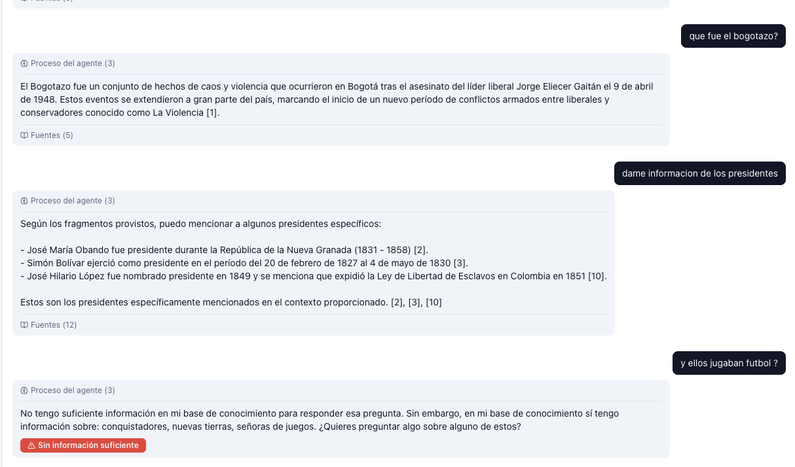
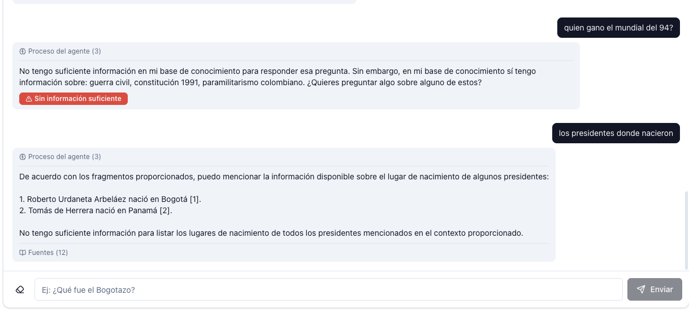

Agente inteligente con LangChain, LangGraph y RAG
Trabajo Final — Implementación de Software · 2026
→ para avanzar
Desarrollo del agente, integración LangChain/LangGraph y backend FastAPI.
Frontend React, autenticación Keycloak, optimización de modelos y RAG.
Materia: Implementación de Software
El conocimiento histórico de Colombia está disperso en enciclopedias, libros y artículos. Responder una pregunta puntual con respaldo requiere consultar varios documentos a mano.
Un chatbot que responde con citas verificables sobre los documentos cargados, se niega a inventar cuando no hay contexto, y sugiere temas alternativos cuando la pregunta queda fuera del corpus.
4 contenedores Docker + Ollama en host (rama metal)
| Capa | Tecnología |
|---|---|
| Frontend | React 18 · Vite · TypeScript · Tailwind · shadcn/ui |
| Backend | FastAPI · Pydantic 2 · SQLAlchemy 2 async |
| Streaming | FastAPI StreamingResponse (Server-Sent Events) |
| Agente | LangChain 0.3 · LangGraph 0.2 |
| LLM | Ollama · qwen2.5:14b-instruct-q5_K_M (~10 GB, GPU) |
| Embeddings | Ollama · bge-m3 (1024 dim, multilingüe) |
| Vector store | PostgreSQL 16 + pgvector (VECTOR(1024), ivfflat cosine) |
| Auth | Keycloak 25 · OIDC · PKCE |
| Orquestación | Docker Compose v2 |
Embebe la pregunta con bge-m3 y trae los top-12 chunks de pgvector por similitud coseno.
1 sola llamada al LLM. Decide relevancia y, si NO, extrae temas del corpus para sugerir.
Streaming token-a-token con qwen2.5:14b, o ensamblaje sin LLM del mensaje de rechazo con sugerencias.
Los últimos 3 turnos del usuario se inyectan como historia → follow-ups con pronombres funcionan.
vectorVECTOR(1024) en tabla chunksivfflat con vector_cosine_ops (100 listas)POST /documents (multipart)chunks con FKFormatos soportados: PDFDOCXTXTMD
rag importado al bootrag-frontenduserkid/health exige Bearer JWT| # | Estrategia | Capa |
|---|---|---|
| 1 | Umbral coseno mínimo (0.25) | retrieve |
| 2 | LLM classify verdict YES/NO con extracción de temas | classify |
| 3 | Prompt estricto: prohibido inventar nombres/fechas/cifras | generate |
| 4 | Auto-rechazo: el modelo emite el mensaje canónico si el contexto no sirve | generate |
El prompt cierra explícitamente la rendija de los disclaimers ("aunque no se menciona en tu contexto...") que permitía filtrar conocimiento paramétrico del modelo.

"¿Qué fue el Bogotazo?" → respuesta con cita [1] ·
"Dame información de los presidentes" → lista verificable con citas [2][3][10] ·
"¿Y ellos jugaban fútbol?" → refusal con temas alternativos del corpus

"¿Quién ganó el mundial del 94?" → refusal con sugerencias · "Los presidentes donde nacieron" → follow-up sin sujeto explícito que funciona gracias a los últimos 3 turnos inyectados al prompt.
grade_documents + grade_generation en una sola classify: menos refusals erróneas y menos latencia.¿Preguntas?
Repositorio: github.com/Luisrrodriguezg/Rag-HistoriaDeCombia